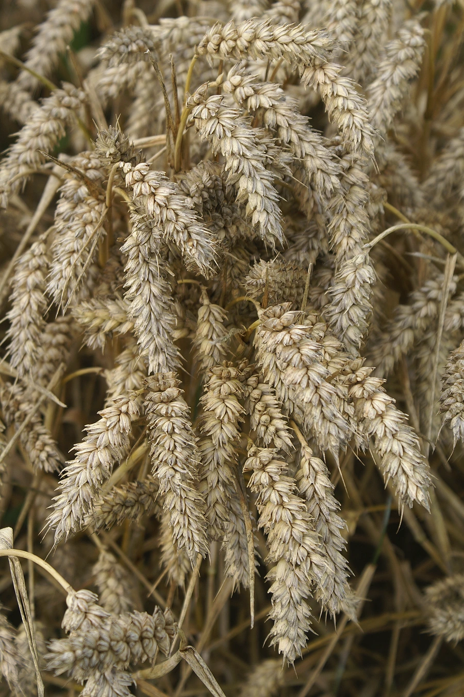

农作物与经济植物 · 植物界
小麦 Triticum aestivum

小麦是世界上种植最广的粮食作物之一，籽粒磨成面粉可制馒头、面包和面条，是许多地区的重要主食。
- 分类
- 门被子植物门纲单子叶植物纲目禾本目科禾本科属小麦属
- 栖息环境
- 温带平原与高原地带，喜凉爽干燥、光照充足和深厚土壤
- 地理分布
- 原产西亚新月沃地，现广泛栽培于中国、印度、欧洲与北美
- 保护级别
- 暂无评估（栽培作物）
物种志
小麦是一二年生草本，株高 0.6–1.2 m，须根系，茎秆直立、中空有节。叶片披针形，叶鞘抱茎。穗状花序顶生，由许多小穗两侧排列而成，每小穗含数朵小花，自花授粉。成熟时麦穗下垂或直立，籽粒呈金黄或褐色，腹面有深沟。按播种期分为冬小麦和春小麦，按粒质分为硬质和软质小麦。
小麦起源于西亚的“新月沃地”，约 1 万年前由野生二粒小麦和山羊草杂交驯化而来，随农耕文明扩散到欧亚各地，是面包文明的基石。它喜温凉、光照充足的气候，冬小麦需经过低温春化才能抽穗结实。面粉中的面筋由麦谷蛋白和醇溶蛋白构成，赋予面团弹性，可用于制作馒头、面包、面条和糕点；麦麸、麦秆可作饲料和造纸原料。
形态与习性
- 株高0.6–1.2 m
- 花序穗状花序，小穗两侧排列
- 类型冬小麦与春小麦
- 籽粒腹面有深沟，分硬质与软质
- 面筋由麦谷蛋白与醇溶蛋白构成
- 主要用途面粉、麦麸饲料与麦秆造纸
- 起源西亚新月沃地，约 1 万年前驯化
趣味知识
- 小麦约 1 万年前在西亚被驯化，与面包的历史几乎一样长。
- 冬小麦必须经历一段低温“春化”，否则难以正常抽穗。
- 面粉能揉出筋，靠的是麦谷蛋白和醇溶蛋白形成的面筋网络。